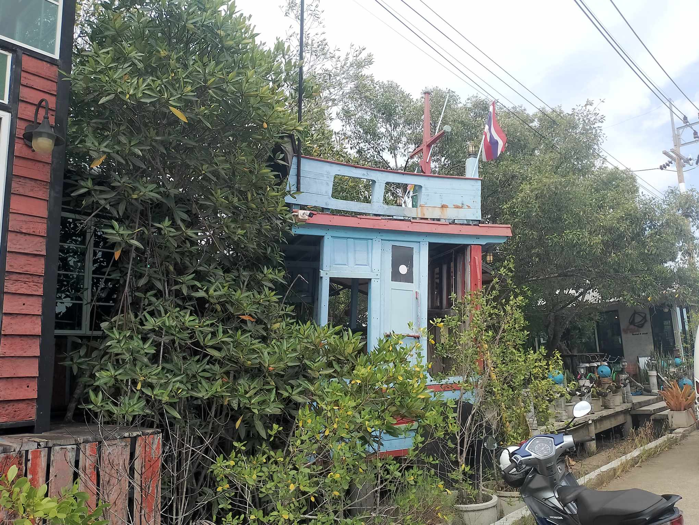
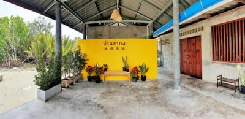

โฮมสเตย์
1.ชาวเลโฮมสเตย์ @ ปากพนัง

.....ที่พักตั้งอยู่ในย่านปากพนังของนครศรีธรรมราช ผู้เข้าพักจึงได้อยู่ใกล้สถานที่ท่องเที่ยวน่าสนใจและร้านอาหารอร่อยๆ ทริปยังไม่จบถ้าไม่ได้แวะไปที่เที่ยวชื่อดังอย่าง สนามบินนครศรีธรรมราช ด้วยอีกสักที่ ที่พัก 3 ดาวนี้มีสิ่งอำนวยความสะดวกที่จะช่วยเพิ่มความผ่อนคลายสูงสุดให้แก่ผู้เข้าพัก
รูปภาพจาก : https://chaolay-homestay.com/
ชาวเลโฮมสเตย์ แอท ปากพนัง เป็นโรงแรมระดับ 3.0 ดาวที่ตั้งอยู่ในเมือง นครศรีธรรมราช ไทย โรงแรมนี้มีทั้งหมด 4 ห้องที่มีความสะดวกสบายและเป็นระเบียบเรียบร้อย ที่นี่มีเวลาเช็คเอ้าท์จนถึงเวลา 12:00 นาฬิกาเท่านั้น และเวลาเช็คอินเริ่มต้นตั้งแต่เวลา 02:00 นาฬิกาเป็นต้นไป โรงแรมนี้สร้างขึ้นในปี 2020 ทำให้คุณมั่นใจได้ว่าสิ่งอำนวยความสะดวกที่นี่จะเป็นสิ่งที่ใหม่และทันสมัย นอกจากนี้โรงแรมยินดีต้อนรับเด็กอายุ 3-12 ปีให้พักฟรีโดยไม่คิดค่าใช้จ่ายเพิ่มเติม
สนามบิน
สนามบินนครศรีธรรมราช (NST) 34.4 กม.
สนามบินตรัง (TST) 113.7 กม.
ราคาเริ่มต้นที่ 729 บาท
GOOGLE MAP : https://maps.app.goo.gl/fzRs5cybwAdtwyGc9
2.บ้านอากง โฮมสเตย์ปากพนัง

.....เป็นที่พักสไตล์โฮมสเตย์ แบบส่วนตัว แนวธรรมชาติ พักผ่อนกับครอบครัวชิวๆ หรือจะมาเที่ยวกับกลุ่มเพื่อนสนุกๆก็ได้ ให้ความรู้สึกเหมือนอยู่บ้าน สามารถทำอาหารทานได้เอง
บ้าน 1 หลังรองรับได้ 10-15 ท่าน 4 ห้องนอน 3ห้องน้ำ 1ห้องครัว
GOOGLE MAP : https://maps.app.goo.gl/FEo3MzyTHSafRdet8
รูปภาพจาก : facebook